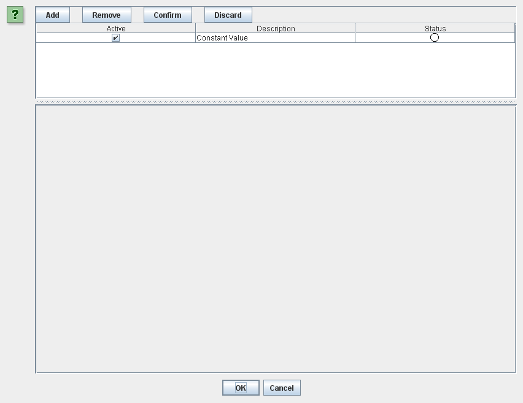
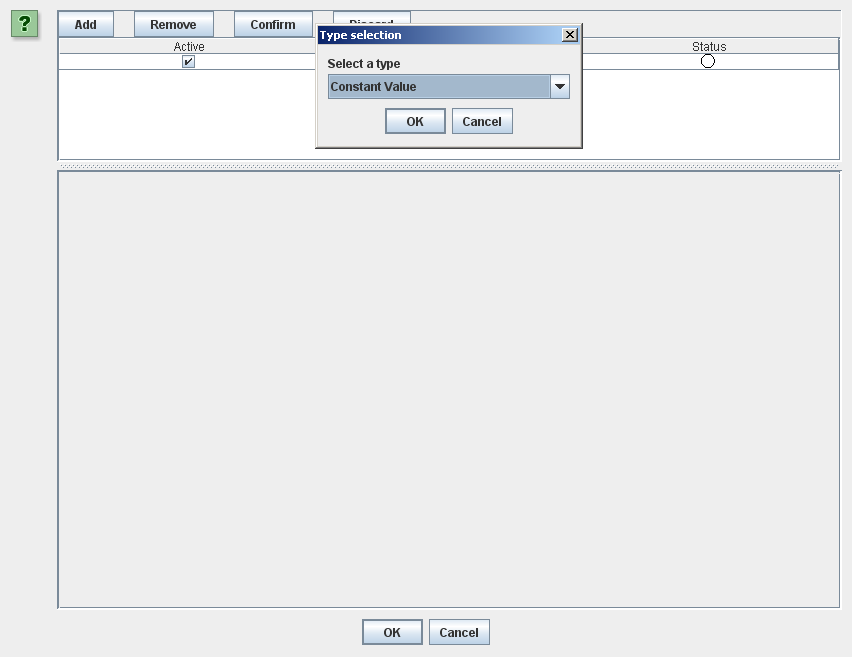
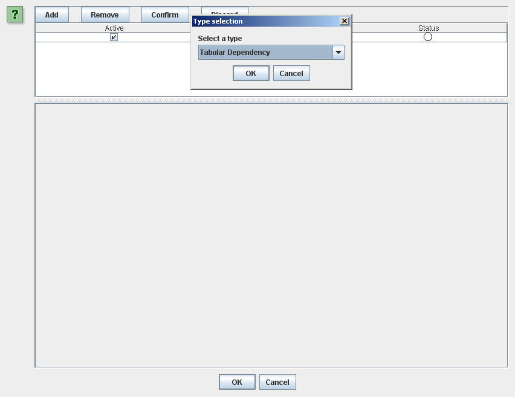
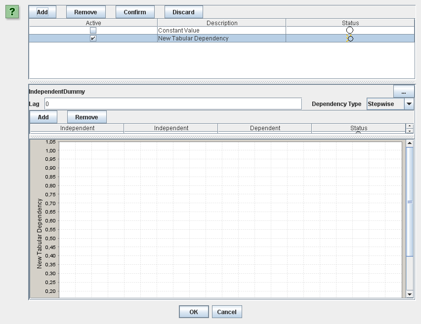
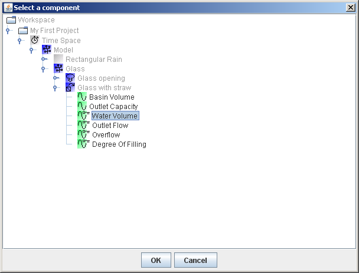
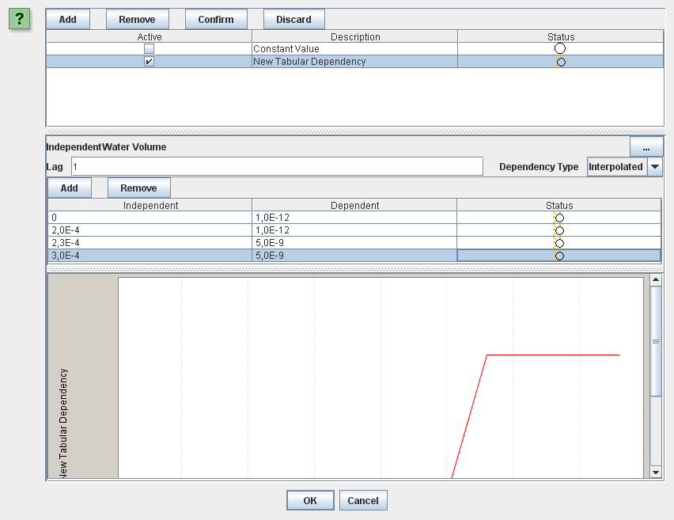
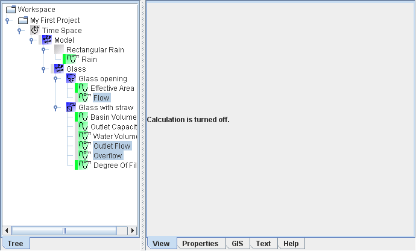

|  | |  | ||
Up until now the flow through the straw has been treated as constant but in our case this flow actually depends on how much water there is in the glass. You may recall this from the case description earlier on. Basically when there is little water in the glass the flow is small and as the volume increases so does the flow up to a given point. Let's take a look at how we in WaterAspects can define such a dependency between variables. In this version of WaterAspects a variable can have many different formulations:
A variable can actually hold several different formulations where only one is active for the simulation. This allows you to quickly switch between formulations and thereby evaluate and compare different definitions (for example different control function). Most variables are by default defined as constants with a constant value formulation. On some variables the variable formulation is locked. This means that the variable's formulation cannot be changed by the user and a small key is shown on the variable icon. A variable is usually locked because its value is calculated by the component it is on. In our glass case, this goes for, for example, "Overflow" whose value calculation is predefined. For some other locked variables, like "Water Volume", you as user can set the initial value but you cannot change the variable's formulation. In our glass case we'll use an interpolated tabular dependency to describe the variation of flow through the straw as a function of the volume of water in the glass. Select and right-click the "Outlet Capacity" variable on the "Glass with straw". Then choose the 'Variable editor' menu item to start up the variable editor which looks like this: In the top of the menu is a list of the formulations on this variable. So far our list only contains one formulation. To add a new formulation press the 'Add' button which will bring forward a small chooser like this: Pick 'Tabular Dependency' in the drop down menu and click the 'OK' button. Your variable editor will now have a new variable formulation in the top table. You need to set the new tabular dependency as Active. Do this by clicking the checkbox in the right column of the table. You should now have something like this: To define the interpolated tabular dependency we now need to:
You can select the independent variable, "Water Volume", by clicking the '...' button and choosing the variable in the tree much in the same way as we selected the downstream water component earlier in this example. When the above is done our variable editor looks like below. To see the full plot of the entered relationship you need to scroll down using the scroll bar on your right. Press the 'OK' button to apply your changes and to close the variable editor window. If you now select "Flow" on the "Glass opening" and "Overflow" and "Outlet Flow" on the "Glass" (again using 'Ctrl' to select more than one variable) you should not that the entered relationship has been considered and that your plot looks something like:  | ||||
| | | | ||